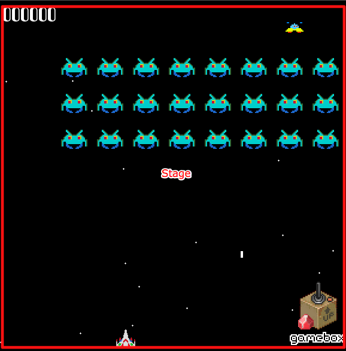

Who am I?
Shawn Anderson
Hobbyist Game Dev
github.com/shawn42
shawn42@gmail.com
Software Developer for Atomic Object
http://atomicobject.com
Why me?
- love 2D games
- hobbyist game dev for years
- working with ruby for many years
What are games?
fun interactions w/ sounds and graphics
They aren't easy
Game Loop
while game_running?
# get user input
# run AI
# move everything
# resolve collisions
# draw graphics
# play sounds
# manage framerate
endMessy and hard to test
- Update methods with thousands of lines of code
- Draw methods with thousands of lines of code
- Crazy input handling
A better way
SDL + Rubygame + Gamebox
SDL
push those low-level bits
Gamebox
lets your brain talk to ruby
http://github.com/shawn42/gamebox
Gamebox Goals
- New game up and running quickly
- Allow for clear DSL
- DRY: prebuilt objects and behaviors
- Helpful, not in the way
- Testable
Gamebox Concepts
- Lights, Camera, Action!
- Every object in a game is an Actor
- Actors have Behaviors
- Actors exist on a Stage
- Actors do NOT draw, ActorViews do



Create a Gamebox game
$ gamebox omg_aliens
$ cd omg_aliens
$ rakeSetting the Stage
src/demo_stage.rb
class DemoStage < Stage
def setup
super
@my_actor = create_actor :my_actor
# ...Setting the Stage
src/demo_stage.rb
target.fill [25,25,25,255]
for star in @stars
target.draw_circle_s([star.x,star.y],1,[255,255,255,255])
endActors
src/my_actor.rb
class MyActor < Actor
endActor is just a location by default
ActorViews
src/my_actor.rb
class MyActorView < ActorView
def draw(target, x_off, y_off)
target.draw_box [actor.x,actor.y], [20,20], [240,45,45,255]
# ...ActorView doesn't exist by default
Behaviors
audible.rb (gamebox src)
require 'behavior'
class Audible < Behavior
def setup
@sound_manager = @actor.stage.sound_manager
# ...modifies an actor; mostly adds methods
Enough talk! Let's make something!
What should we build?
Step one: Rush mix tape
copy rushremix.ogg into omgaliens/data/music
soundmanager.playmusic :rush_remix in stage#setup
Create the player
$ ./script/generate actor Playercreates the actor and spec
Player to the Stage
change demostage.rb to create :player instead of :myactor
have Player spawn at 200, 550
answer
@player = spawn :player, :x => 200, :y => 550Uncloak the Player
create an ActorView, nah
use canned :graphical behavior from Gamebox
copy player.png to data/graphics
answer
has_behavior :graphicalUndock the ship
use inputmanager.whilekey_pressed to monitor a key down
attr_accessor :move_left, :move_right
def setup
i.while_key_pressed :left, self, :move_left
i.while_key_pressed :right, self, :move_rightnow to use those variables
add the :updatable behavior
define update(time) method that modifies position
has_behaviors :graphical, :updatable
def update(time_delta)
velocity = 0.12 * time_delta
@x += velocity if @move_right
@x -= velocity if @move_left
endPlayer needs to shoot
$ ./script/generate actor FrickinLaser
$ ./script/generate view FrickinLaserView FrickinLaser needs to update its position
has_behavior :updatable
def update(time_delta)
velocity = 4*0.1*time_delta
@y -= velocity
remove_self if @y < 30
endFrickinLaserView needs to draw a box
def draw(target, x_offset, y_offset)- target is a Rubygame screen
- xoffset, yoffset viewport offsets (ignore for now)
Draw it
target.draw_box_s([x,y], [x2,y2], color_array)use the actor's x and y
color is RGBA array
Get a FrickinLaser on the Stage
Back to shooting ..
Player#setup should use input_manager#reg to shoot on KeyPressed, :space
Player#shoot should spawn :frickin_laser at player's location
Get the key press
input_manager.reg KeyPressed, :space do
shoot
endShoot the FrickinLaser
def shoot
laser = spawn :frickin_laser,
:x => @x + (image.width/2), :y => @y
endWhat kind of silent laser is that?
copy shoot.wav into data/sounds
add :audible behavior to Player
play_sound takes the name of the file as a sym ##
has_behaviors :audible, :graph...
play_sound :shootCreate Alien actor
Now let's shoot him!
Gamebox Collisions
circles only, for now
:collidable behavior (takes args)
:collidable => {:shape => :circle,
:radius => 20}Who should collide?
- Player
- FrickinLaser
- Alien
Add those behaviors
what to do when things collide?
use oncollisionof to define interactions
remove_self on alien and laser
play the :death sound
on_collision_of :alien, :frickin_laser do |alien,laser|
alien.remove_self
laser.remove_self
sound_manager.play_sound :death
endExplore
- add more sounds, animations
- aliens shoot back (add_timer)
- add scores, backgrounds
- add multiple waves, lives
- add ufos
- anything!